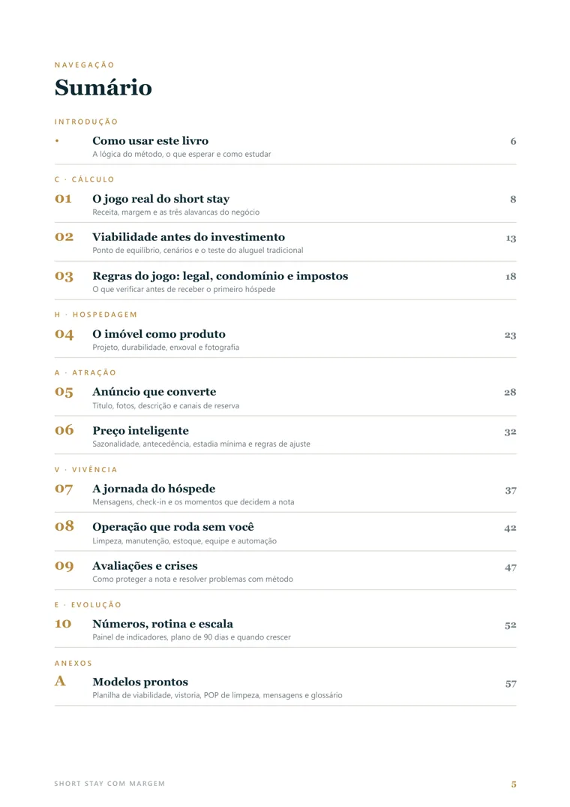
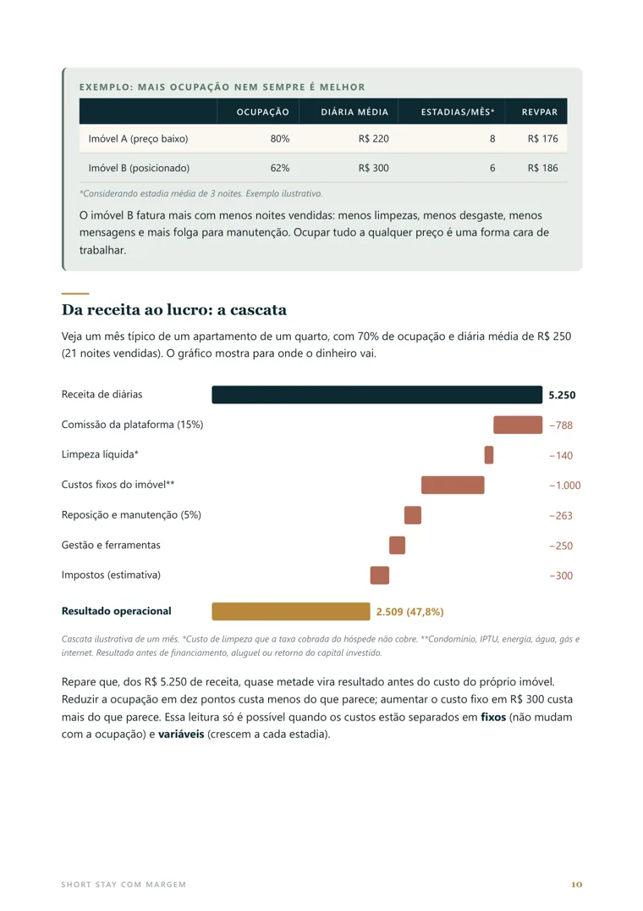
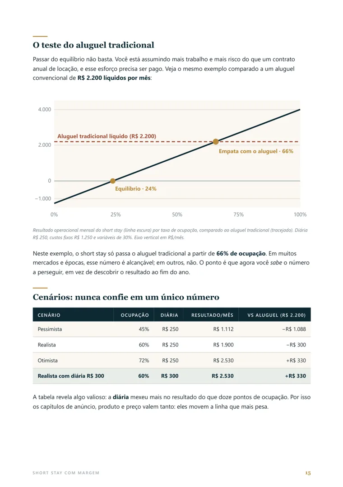
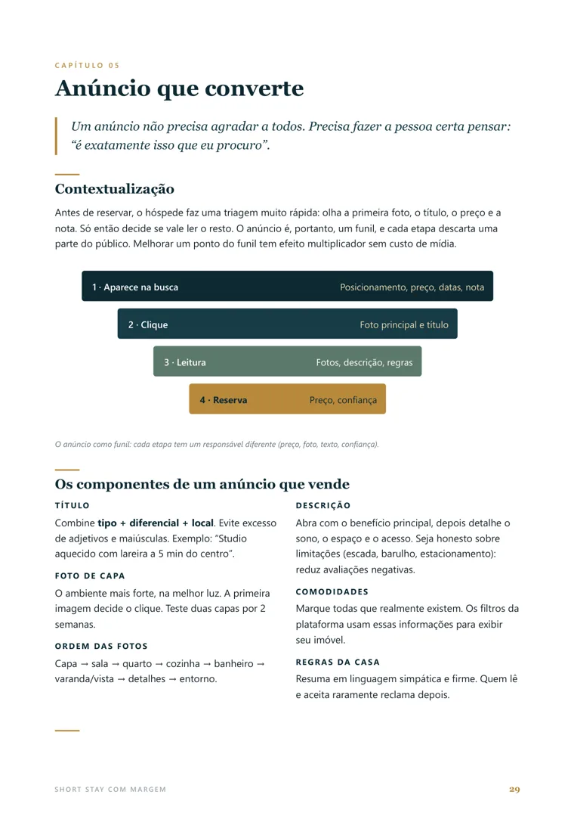
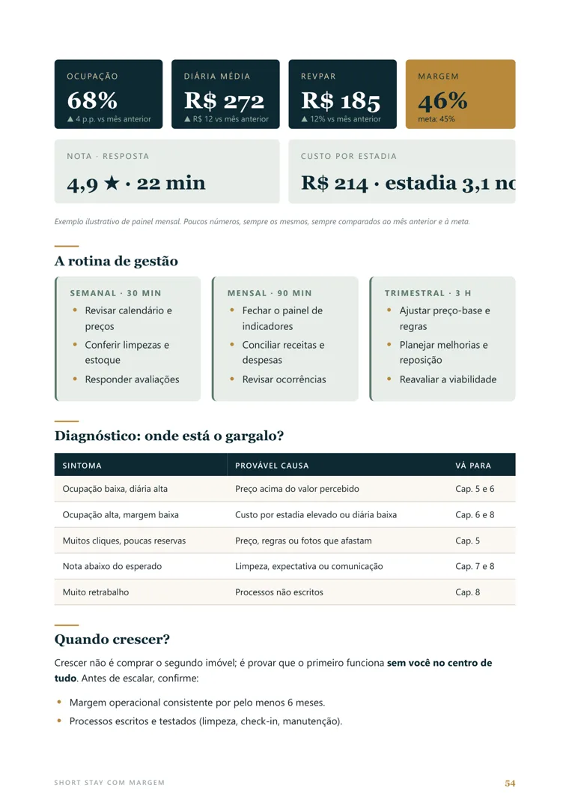

Decidir com números, não com palpite
Uma planilha de viabilidade com três situações e o cálculo de quantas noites você precisa vender.
Resultado: você sabe se o imóvel compensa antes de gastar.
Guia de aluguel de temporada
Para quem tem um imóvel parado, quer uma renda extra ou já aluga por temporada e não vê o lucro: aprenda a calcular se vale a pena, preparar o imóvel, anunciar, cobrar o preço certo e administrar sem se perder.
O problema
Quem aluga por temporada costuma se esforçar muito. O que falta, quase sempre, não é esforço: é fazer as contas certas e organizar o básico.
Entre o que o hóspede paga e o que fica para você existem comissão da plataforma, limpeza, lavanderia, condomínio, impostos e reposição. Cada um parece pequeno. Somados, decidem se o negócio vale a pena.
Vender muitas noites por pouco enche o calendário e o desgaste do imóvel, e pode render menos do que vender menos noites pelo preço certo.
O hóspede avalia como dormiu, como tomou banho e se tudo funcionou. Decoração bonita não compensa colchão ruim ou chegada confusa.
Sem um jeito padrão de limpar, responder e resolver imprevistos, tudo depende da sua memória e da sua presença.
Reforma, móveis e enxoval pagos antes de saber se o preço que o mercado paga sustenta o investimento.
Aluguel de temporada pode ser uma boa fonte de renda, mas só quando as decisões são tomadas na ordem certa e com números.
A oportunidade
No aluguel de temporada, você recebe por noite em vez de por mês, e o valor da diária costuma ser maior. Em compensação, as contas da casa, a limpeza e o atendimento ficam com você, e algumas noites podem ficar vazias.
| Aluguel tradicional | Aluguel de temporada | |
|---|---|---|
| Como você recebe | Um valor fixo por mês | Por noite vendida, variando conforme a época |
| Quem paga as contas | Em geral, o inquilino | Você (energia, água, internet, condomínio) |
| Limpeza e atendimento | Quase nenhum | Você, ou alguém que você contrata |
| Risco | Imóvel parado entre inquilinos | Noites vazias e rotina de reposição |
| Potencial de renda | Mais previsível | Pode ser maior, ou menor, dependendo de como você administra |
Por isso, a pergunta certa não é “aluguel de temporada dá dinheiro?”, e sim “para o meu imóvel, nas minhas condições, vale mais a pena?”. O livro ensina a responder isso com números, antes de você gastar.
Exemplo ilustrativo do livro: um apartamento com 70% das noites vendidas a R$ 250 gera cerca de R$ 5.250 de receita no mês. Depois dos custos do exemplo, sobram cerca de R$ 2.500 antes do custo do próprio imóvel. Seus números serão diferentes.
O livro
“Short stay” é o nome em inglês para hospedagem de curta duração. O livro explica tudo em português simples, na ordem em que as decisões precisam ser tomadas: o Método CHAVE.
Faça a conta antes de gastar: quanto pode render, quanto custa e se vale mais do que o aluguel tradicional. Veja também regras de condomínio, cadastros e impostos.
Prepare o imóvel para o hóspede: o que mais pesa na avaliação, materiais que duram, enxoval e fotos.
Monte um anúncio que convence e defina o preço certo para cada época, com um valor mínimo, um normal e um máximo.
Receba bem, organize a limpeza e a rotina e saiba o que fazer quando algo dá errado.
Acompanhe poucos números todo mês, descubra onde o lucro se perde e saiba a hora certa de crescer.
O que você vai aprender
Cada capítulo traz exemplos, os erros mais comuns, um passo a passo, um exercício e uma lista para você conferir o que já fez.
De onde vem o dinheiro e para onde ele vai: noites vendidas, preço por noite e custo de cada hospedagem. A conta da receita até o lucro.
Você aprende: a diferença entre faturar e lucrar, e por que mais noites vendidas nem sempre significa mais dinheiro.
O estudo de viabilidade: investimento inicial, receita em três situações, custos fixos e variáveis e comparação com o aluguel tradicional.
Você aprende: a descobrir quantas noites precisa vender para não ter prejuízo e a decidir com uma regra simples de “vai ou não vai”.
O que verificar antes do primeiro hóspede: condomínio, tipo de locação, cadastros, tributos e dados dos hóspedes.
Você aprende: o mapa de perguntas para levar ao advogado, ao contador e à prefeitura.
O que mais pesa na experiência, materiais para uso intenso, enxoval, fotos e a noite-teste.
Você aprende: a gastar primeiro no que importa: sono, banho e limpeza.
Título, fotos, descrição, regras da casa e onde anunciar, incluindo reservas diretas.
Você aprende: a montar um anúncio que faz a pessoa certa clicar e reservar.
Como o preço muda com a época, o dia da semana, a antecedência, os eventos e a concorrência.
Você aprende: a definir preço mínimo, normal e máximo e regras para ajustar sem entrar em pânico.
Os seis momentos da estadia, mensagens prontas e o guia da casa.
Você aprende: a eliminar problemas antes que virem avaliação ruim.
Limpeza, enxoval, estoque, manutenção, atendimento e o que automatizar.
Você aprende: um passo a passo de limpeza e quando vale contratar ajuda.
Como a nota funciona e um roteiro para resolver reclamações e problemas.
Você aprende: a responder avaliações e a agir quando algo dá errado.
Os oito indicadores essenciais, a rotina de gestão, o diagnóstico por sintoma e o plano de 90 dias.
Você aprende: a montar seu painel mensal e a decidir quando pensar em um segundo imóvel.
Planilha de viabilidade para imprimir, vistoria do imóvel, passo a passo de limpeza, mensagens para hóspedes e glossário.
Benefícios
Uma planilha de viabilidade com três situações e o cálculo de quantas noites você precisa vender.
Resultado: você sabe se o imóvel compensa antes de gastar.
A conta que separa receita, comissão, limpeza, contas da casa, reposição e impostos.
Resultado: clareza sobre quanto sobra por estadia e por mês.
Prioridades, materiais fáceis de limpar, enxoval na quantidade certa e uma noite-teste.
Resultado: menos gasto com reposição e avaliações melhores.
Anúncio bem montado e preço com mínimo, normal e máximo, ajustado por época e antecedência.
Resultado: uma diária média melhor e menos datas vendidas barato.
Passo a passo de limpeza, lista de estoque, manutenção e mensagens prontas.
Resultado: menos improviso e menos tempo gasto no dia a dia.
Painel com oito números, rotina de acompanhamento e critérios para um segundo imóvel.
Resultado: crescer com base no que o seu imóvel já prova que rende.
Esse livro é para você?
Prévia do livro
Diagramado com tabelas, gráficos e quadros de destaque, para você entender rápido e aplicar. As imagens abaixo são páginas do próprio PDF.





Sobre o autor
Walter Costa é o autor do Short Stay com Margem, publicado pela Primato.
O livro foi escrito para quem quer entender o aluguel de temporada sem jargão: ele reúne, em português simples, o passo a passo para calcular, preparar, anunciar e administrar um imóvel, com exercícios, listas e modelos para aplicar.
Dúvidas sobre o livro ou sobre a compra? Escreva para walter_dhex@hotmail.com.
Leitores
[TEXTO DO DEPOIMENTO REAL]
Compra simples e segura
O pagamento é feito no ambiente da Kiwify, com cartão, Pix ou boleto. Este site não pede seus dados de pagamento.
Assim que o pagamento é confirmado, o acesso chega no e-mail que você informou na compra.
O livro fica na área de membros, e você lê no celular, no tablet ou no computador.
Garantia de 7 dias. Se o livro não for o que você esperava, peça o reembolso pela Kiwify dentro desse prazo. Dúvidas antes de comprar? Escreva para walter_dhex@hotmail.com.
A oferta
Pagamento únicoR$ 47ou parcelado no cartão em até 12x*
Compra segura pela Kiwify: cartão, Pix ou boleto. *Parcelamento com acréscimo.
Antes de comprar
Melhor ainda: você aprende a avaliar uma oportunidade antes de comprar ou alugar, e o que conferir antes de investir.
Comece pelo capítulo 10: ele ajuda a descobrir onde o lucro se perde e indica qual capítulo ler para corrigir.
Não precisa. Os termos são explicados em português, com exemplos e glossário.
Cada capítulo é curto e prático. Você pode seguir a ordem ou ir direto ao assunto de que precisa.
Sim. O acesso é liberado depois do pagamento, e o PDF abre no celular, no tablet e no computador.
Você tem 7 dias de garantia. O pedido de reembolso é feito pela Kiwify.
Guia rápido
No aluguel de temporada, o imóvel é alugado por poucos dias ou semanas, geralmente por plataformas como o Airbnb. O hóspede paga por noite e o dono cuida de tudo o que torna a estadia possível: limpeza, roupa de cama, reposição de itens, contas da casa e atendimento.
Depende do imóvel, da cidade, da época e da administração. A renda vem de três coisas: quantas noites você vende (a ocupação), quanto recebe por noite (a diária média) e quanto cada hospedagem custa. Receita não é lucro: é preciso descontar comissão da plataforma, limpeza, condomínio, impostos, reposição e manutenção.
Estime o que o imóvel renderia em três situações (pessimista, realista e otimista), some todos os custos e descubra o número mínimo de noites que precisa vender para não ter prejuízo. Depois compare com o que o mesmo imóvel renderia no aluguel tradicional. Se o aluguel de temporada não ganhar com folga, pode não compensar o trabalho a mais, e saber disso antes de investir economiza dinheiro.
Siga uma ordem: calcular se vale a pena, conferir as regras do condomínio e da cidade, preparar o imóvel, anunciar, definir o preço e organizar a rotina de limpeza e atendimento. É a sequência que o e-book detalha, capítulo por capítulo.
A administração fica mais leve quando a rotina é escrita: um passo a passo de limpeza, uma lista de estoque, um calendário de manutenção e mensagens prontas para cada momento da estadia. Com isso você pode, se quiser, passar parte do trabalho para outra pessoa sem perder a qualidade.
Conteúdo educativo. Regras de condomínio, impostos e cadastros variam conforme a cidade e a sua situação; consulte profissionais habilitados.
Perguntas frequentes
A renda vem das noites que você vende, pelo preço que você cobra, menos tudo o que a hospedagem custa para acontecer. Por isso o caminho é: calcular se o imóvel vale a pena, prepará-lo para agradar o hóspede, anunciar bem, definir o preço certo para cada época e acompanhar os números todo mês. O e-book ensina cada etapa, com exemplos e modelos.
Depende do imóvel, da cidade, da época e de como você administra. O aluguel de temporada pode render mais por mês, mas também dá mais trabalho e tem mais custos e riscos, como noites vazias. O e-book mostra como comparar os dois com números antes de decidir.
Comece fazendo a conta: quanto o imóvel pode render e quanto custa mantê-lo. Depois verifique as regras do condomínio e da cidade, prepare o imóvel com o essencial (cama, banho e limpeza), crie o anúncio, defina o preço e organize a limpeza e o atendimento. O e-book segue exatamente essa ordem.
Os custos mais comuns são a comissão da plataforma, a limpeza e a lavanderia, condomínio, IPTU, energia, água e internet, reposição de itens, manutenção, impostos e ferramentas de gestão. O e-book ensina a listar e separar esses custos para você descobrir quanto sobra de verdade.
Estime o quanto você receberia em três situações (pessimista, realista e otimista), some todos os custos, descubra a ocupação mínima para não ter prejuízo e compare o resultado com o aluguel tradicional do mesmo imóvel. O capítulo 2 do e-book mostra esse cálculo passo a passo.
Não. Quem ainda não tem imóvel pode usar o e-book para avaliar uma oportunidade antes de comprar ou alugar, e para saber o que verificar antes de investir.
Depende da convenção e das decisões do condomínio, e o entendimento da Justiça muda com o tempo. Por isso o e-book orienta a ler a convenção e o regimento antes de comprar ou mobiliar o imóvel e a consultar um advogado. O conteúdo é educativo e não substitui consultoria jurídica.
Depende do seu caso, do volume e da forma de tributação. O e-book explica o que levar ao contador para decidir, mas não substitui a orientação de um profissional contábil.
Sim. Quem já aluga encontra capítulos sobre preço, anúncio, avaliações, limpeza, rotina e indicadores, além de um diagnóstico para descobrir onde o lucro está se perdendo.
Taxa de ocupação é a porcentagem de noites que você conseguiu vender. Diária média é o valor médio que você recebeu por noite vendida. Juntas, mostram quanto o imóvel gera de receita antes de descontar os custos.
Depois da confirmação do pagamento, você recebe o acesso por e-mail e baixa o PDF pela área de membros da Kiwify, que funciona no computador e no celular.
O pagamento é processado pela Kiwify, com cartão de crédito (parcelamento em até 12x, com acréscimo), Pix e boleto.
Sim. A compra tem garantia de 7 dias, conforme o prazo legal de arrependimento. Se o e-book não for o que você esperava, peça o reembolso pela Kiwify dentro desse prazo.
Não. Os números do livro são exemplos para ensinar o raciocínio. O resultado de cada imóvel depende da cidade, da época, do condomínio, do que você oferece ao hóspede e de como administra.
Calcule se o imóvel compensa, prepare, anuncie, cobre o preço certo e acompanhe os números. Tudo em um guia de 61 páginas, em português simples.
Quero acessar o livro por R$ 47
Garantia de 7 dias · Acesso imediato · Compra segura pela Kiwify